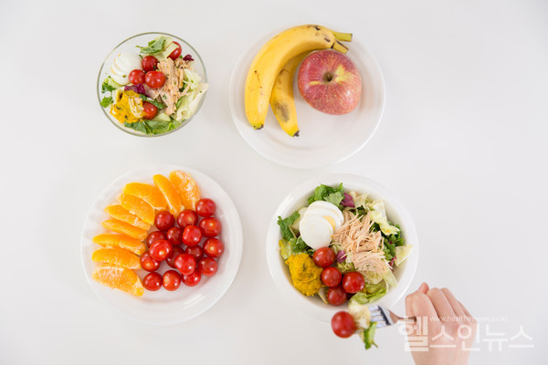
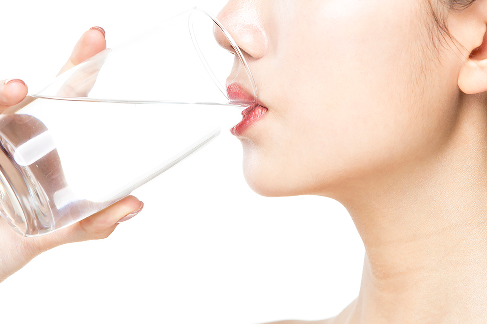
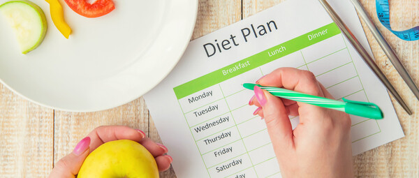

지난 3일 미국 매체 ‘US News & World Report’에서 30여명의 영양사와 의사의 의견을 취합한 “2023년 최고의 다이어트 순위”를 발표했다. 이들은 가장 많은 이들이 시도하는 24가지의 다이어트 법 중 목표별로 가자 적합한 다이어트법의 순위를 정했다.
전반적으로 가장 추천 : 지중해 식단 다이어트
과일, 채소, 통곡물, 저지방 단백질과 저지방 유제품 위주의 식단을 유지하는 DASH(고혈압 환자식) 다이어트법으로, 적색 고기를 피하지는 않으나 가급적 적게 먹고 생선이나 흰색 고기 등으로 단백질을 섭취한다. 장기적으로 실시할 경우 체중감량을 물론 심혈관질환과 대사질환 등을 개선하고 치매 등의 퇴행성 질환을 예방하는 데 도움이 된다.
체중 감량에 가장 효과적 : WW 다이어트
Weight Watchers로 알려진 WW 다이어트법이 체중감량에 가장 효과가 뛰어난 것으로 나타났다. 이는 음식마다 칼로리를 계산해 점수를 매겨 허용된 숫자만큼만 섭취한다. 또한 다이어트 감시자를 두어 식단과 체중 변화를 지속적으로 감시하게 하는 것이 특징이다. 칼로리 조절을 하기 때문에 체중을 감량하는 데에 가장 효과적이라는 평가다.
가장 빨리 체중 감량 : 케토 다이어트
지방 연소를 통해 체중 감량을 목표로 하는 ‘고지방, 저탄수화물 다이어트’는 체중 감량이 가장 빠르게 이뤄지는 다이어트로 단기간에 살을 빼야한다면 시도해 볼 만 하다. 하루 총 칼로리의 80%를 지방으로 섭취하고, 대신 탄수화물류의 섭취를 극단적으로 줄이는 식사법이다. 아보카도, 올리브오일, 견과류, 생선 등 건강한 지방을 풍부하게 함유한 식품 위주로 식사하는 것이 가장 중요하다. 다만 장기적으로 지속하면 부작용으로 고칼슘혈증 등을 부를 수 있으며 임산부나 당뇨병 환자의 경우 합병증을 유발할 수 있어 권장되지 않는다.
심혈관질환 예방에 가장 효과 : 지중해 식단 다이어트
지중해 식단은 체내 지방을 낮추며, 체중 감량, 대사 능력을 개선해 심혈관질환을 예방하는 데 가장 좋은 효과를 낸다. 지난해 세계적 의학 저널 랜싯에 게재된 논문에 따르면 심근경색증이나 협심증 등을 앓은 심혈관질환자 대상으로 지중해식 다이어트를 하게 한 결과, 7년 이후 재발률이 26% 낮아졌으며, 특히 남성은 33% 감소율을 보였다.
당뇨병 예방 효과 : 대시(DASH) 다이어트
미국 국립보건원(NH)이 고혈압 환자들을 위해 영양학자들과 만든 식단으로 DASH는 Dietary Approaches to Stop Hypertension의 약자다. 핵심은 ‘저염, 저당, 저지방’식단이다. 식이섬유와 과일, 저지방 유제품의 섭취를 늘리고 소금, 설탕, 탄수화물, 포화지방의 섭취를 제한한다. 고혈압 뿐만 아니라 혈당을 낮추는 데도 매우 효과적으로, 2011년 ‘당뇨병 케어’에 발표된 소규모 연구에 따르면 제2형 당뇨병 환자에서 8주 후 혈당 측정치인 A1C와 공복 혈당 감소가 확인됐다. 미국 당뇨병 협회(American Diabetes Association)는 당뇨병 환자들에게 이 식단을 권장하고 있다.
뼈와 관절 건강을 보호하며 하기 좋은 : 대시 다이어트 & 지중해 다이어트
뼈와 관절을 보호하면서 하기 좋은 다이어트로는 대시 다이어트와 지중해 식단 다이어트가 공동 1위를 차지했다. 이들 다이어트법은 건강한 유제품을 충분하게 섭취할 수 있어, 뼈 건강을 지키며 다이어트하기에 좋다. 또 건강한 식단을 통해 신체 기능을 회복하고, 고지혈, 콜레스테롤 수치 등을 안정화하여 염증과 퇴행성 질환을 예방해 관절염 예방에도 효과가 있다.
건강한 식습관 만들기 : 지중해 다이어트
지중해 식단 다이어트, 대시 다이어트 그리고 유연한 채식주의인 플렉시테리언(Flexitarian) 식단 다이어트가 각 1, 2, 3위를 차지했다. 지방식 식단 다이어트와 플랙시테리언 식단 다이어트는 몸에 좋은 단백질과 채소, 과일, 통곡물 등을 풍부하게 섭취하면서 붉은 고기, 가공육 등을 멀리하여 장기적으로 몸에 매우 이롭다. 대시 다이어트 역시 고혈압과 당뇨병 등의 대사질환을 예방해 장기적으로 건강한 몸을 만드는 효과가 있다.
초보가 따라하기 좋은 다이어트 : 플렉시테리언과 TLC 다이어트
다이어트 초보가 손 쉽게 따라하기 좋은 다이어트로는 플렉시테리언과 TLC 다이어트가 공동으로 1위로 꼽혔다. 플렉시테리언 식단은 통곡물, 채소, 과일 위주로 식사하며, 고기는 가급적 멀리하고 계란이나 닭가슴살, 생선 등으로 대신하는 식단이다. 엄격하게 칼로리이나 규칙이 없어 쉽게 도전하기 좋다.
TLC(Therapeutic Lifestyle Changes Diet) 다이어트는 저지방 식단 다이어트로 일일 섭취 칼로리 중 포화지방을 7% 미만으로 줄이는 것이 핵심이다. 기름진 고기, 버터 등의 유제품, 볶거나 튀긴 음식, 햄이나 소시지 등의 가공육을 피하고 채소의 섭취량을 늘린다. 몸 속의 지방을 연소시키고, 혈관 속 콜레스테롤을 낮추는 데 효과가 있다.

1. 건강한 다이어트 식단 실천하기
다이어트 식단이라고 하면 탄수화물 섭취를 줄이고 단백질 섭취를 늘리는 극단적인 식단을 생각하는 경우가 많은데요. 저탄수화물 & 고단백질 식단은 장기적으로 진행했을 때 오히려 더 큰 문제를 가져올 수 있어 주의가 필요해요. 스웨덴에서의 한 연구에 따르면, 하루에 탄수화물 섭취량을 20g 줄이고 단백질 섭취량은 5g 늘린 사람의 경우 심혈관계 질환 위험이 5% 증가하는 것으로 나타났다고 해요.
물론, 탄수화물을 적게 먹고 단백질 섭취를 약간 늘리는 식단은 단기적인 다이어트에 도움이 되는 것은 맞지만 장기로 했을 경우 건강에 좋지 않아 강하게 추천드리지 않아요.
다이어트 식단 추천
- 잡곡밥 (남성: 한 공기, 여성: 3분의 2공기)
- 채소 반찬 세 가지
- 단백질 식품 반찬 한 가지 (생선구이, 두부조림, 콩자반, 불고기 등
- 김치
다이어트 식단에 도움되는 음식
- 현미밥
- 삶은 달걀
- 고구마
- 닭가슴살
- 두부
- 토마토
탄수화물은 총 섭취 에너지의 55~65%, 단백질은 15% 정도로 맞추는 게 가장 이상적이지만 섭취량을 정확히 맞추는 게 어렵다면, 밀가루나 흰쌀과 같이 정제된 탄수화물보다는 복합 탄수화물이 많이 든 통곡류, 채소, 과일 위주를 먹고 단백질도 동물성 대신 식물성 단백질(견과류, 콩 등) 위주로 먹으면 체중 감량 효과를 기대해 볼 수 있을 거예요.
2. 식사 전 물 마시고 천천히 꼭꼭 씹어먹기
식사 30분 전 물을 마시면 위장에 물이 채워져 공복감이 덜해 식사량을 줄일 수 있어요. 약 500ml 정도 마시면 적당하다고는 하지만, 너무 과하지 않게 한두 잔 정도만 마셔도 공복감을 달래주는 데 도움이 될 거예요. 식사 중에 마시는 물은 소화 기능에 부담이 될 수 있으므로 가급적이면 식사 중에는 물을 삼가 주세요.
3. 탄산음료와 같은 단 음료 피하기
인위적으로 단맛을 내는 액상과당 음료는 다이어트의 적으로 알려져 있죠. 액상과당은 옥수수 시럽을 가공해 만든 인공 첨가물인데 설탕보다 더 단순한 구조로 가공돼 몸에 더 빨리 흡수되고 체지방 전환도 설탕보다 더 잘 된다고 해요. 또한 혈당을 급격히 상승시켜 인슐린 분비를 촉진, 호르몬의 균형을 깨트리는 주범이기 때문에 반드시 멀리해 주셔야 해요. 탄산음료와 같은 단 음료 대신 팥차, 히비스커스차와 같은 차를 가까이 해 주세요.
4. 가벼운 운동으로 칼로리 소모하기
유산소 운동은 단기간 다이어트에 아주 큰 도움을 주는데요. 많은 분들이 머리로는 알고 있지만 실천하기 어려워하는 방법 중 하나에요. 처음부터 너무 무리하게 유산소 운동을 하는 것보다 10분 걷기에서 30분까지 걷기와 같이 점차 시간이나 속도를 늘려가는 걸 추천해요. 유산소 운동은 도파민과 같은 기분 좋은 호르몬을 촉진시켜 스트레스 해소에도 도움이 되기 때문에 장기적으로도 다이어트에 도움이 될 수 있어요.
5. 충분한 수면 취하기
수면을 충분히 취하는 것만으로도 단기 다이어트에 도움 된다는 사실, 알고 계신가요? 늦은 시간까지 스마트폰을 보지 않고 일찍 잠자리에 들어 최소 7시간 이상 수면을 취한다면 체지방을 태우고 체중 증가의 위험을 예방할 수 있어요. 한 연구에 따르면, 5시간 이하 수면을 취하는 사람들은 7시간 이상 자는 사람들에 배해 체중 증가의 위험에 더 노출되어 있는 것으로 밝혀졌다고 해요. 또한, 수면 부족은 스트레스의 요인이 되기도 하기 때문에 늦어도 밤 11시~12시에는 잠자리에 들어 7~8시간의 수면을 취해주시길 추천드려요.
만약, 고도비만이라면 비만 치료 약물의 도움을 받는 것도 방법이 될 수 있어요. 체중을 조절해주는 식욕억제제, 지방분해효소 억제제 등으로 다이어트 효과를 기대해볼 수 있지만 약물은 전문가와의 정확한 상담이 반드시 동반되어야 해요.

체중감량을 할 때 자신이 무엇을 먹었는지 솔직하고 성실하게 기록하는 것이 다이어트에 더 효과적이라는 연구 결과가 나왔다.
4일 비만 특화 의료기관 365mc는 인공지능 빅데이터 전담부서 호빗을 통해 지난해 4월 15일부터 올해 2월 5일까지 ‘인식단그림’에 식단을 등록한 921명 데이터를 분석한 결과 숨김없이 꾸준하게 식단일기를 작성한 그룹이 그렇지 않은 그룹에 비해 평균 감량 몸무게가 높은 것으로 나타났다고 밝혔다.
앞서 ‘인식단그림’이란 식단 속 그림이란 뜻으로 모두의 식단과 인식단그림 등 이 기관에서 다이어트 기록을 위해 자체 개발한 식단 일기 앱이다. 고객이 식단 사진을 찍어 공유하면 전문 영양사가 해당 식단에 대한 분석과 조언 등 코칭을 제공하는 서비스로 이번 연구는 인식단그림의 식단일기 등록 30만건 돌파를 기념해 시행됐다.
연구팀은 우선 인식단그림 사용자의 게시물 업로드 수를 기준으로 상위그룹(인당 총 48건 이상 게시물 업로드)과 하위그룹(인당 6~22건 게시물 업로드)으로 나눠 각 그룹의 식단 내용과 체중감량 평균치를 분석했다.
그 결과 게시물 업로드 수가 많은 상위그룹이 하위그룹보다 높은 체중감소를 보였다. 특히 상위그룹 466명이 작성한 식단일기는 다이어트식단(38%) 외식(25%) 간식(20%) 집밥(17%) 순이었으며, 하위그룹 455명의 식단일기는 다이어트식단(63%) 외식(16%) 집밥(14%) 간식(6%) 배달(1%) 순으로 집계됐다.
하위그룹이 상위그룹보다 다이어트식단을 25% 많이 작성했음에도 불구하고 체중 변화는 상위그룹이 더 높게 나타난 것으로 드러났다. 상위그룹의 몸무게 변화량은 평균 5.06㎏으로 하위그룹(2.81㎏)보다 효과적인 체중감소를 보였다.
연구팀은 “위와 같은 결과는 게시물 업로드 수 차이가 몸무게 변화량에 유의미한 영향을 미치고 있음을 나타내는 것”이라며 “무엇을 먹었는지 꾸준하고 솔직하게 기록하는 습관이 체중감소에는 효과적임을 시사한다”고 설명했다.
한편, 이상열 경희대병원 내분비내과 교수팀도 자신의 체중을 자주 확인하고 식사 빈도나 내용을 꼼꼼히 기록하는 것이 체중 감량을 위한 핵심이라는 연구 결과를 내놓기도 했다.
이에 전문가들은 식사 일기를 쓰면 자신의 식단을 복기하면서 문제점을 스스로 깨닫기 때문에 식습관 개선 효과가 좋다고 설명하는 한편, 식사 일기를 쓸 때는 하루 동안 먹은 음식의 종류와 양, 먹은 시간 등을 기록하면서 자신의 식습관을 돌아보는 것이 중요하다고 설명했다.